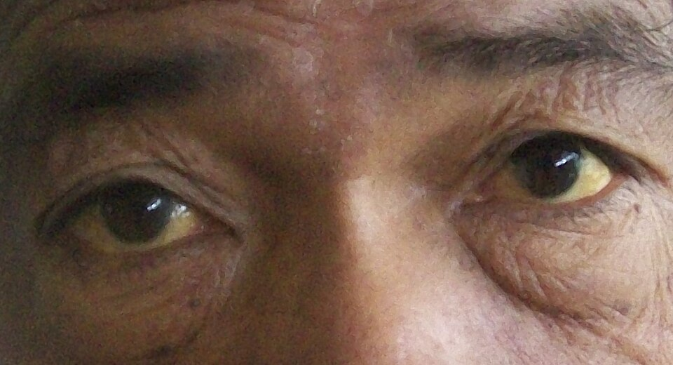
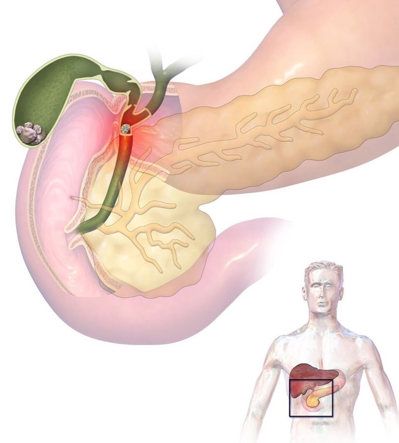
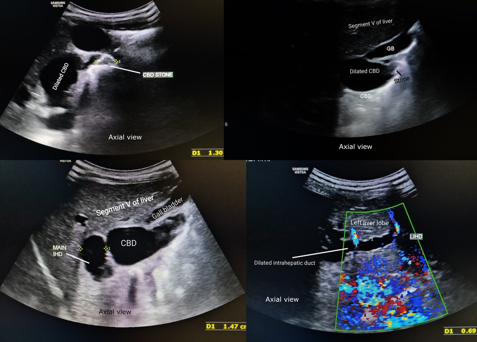
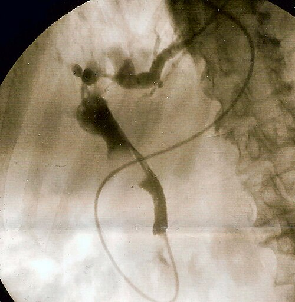
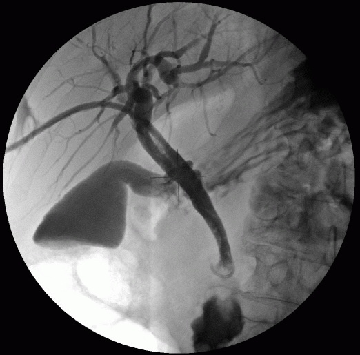
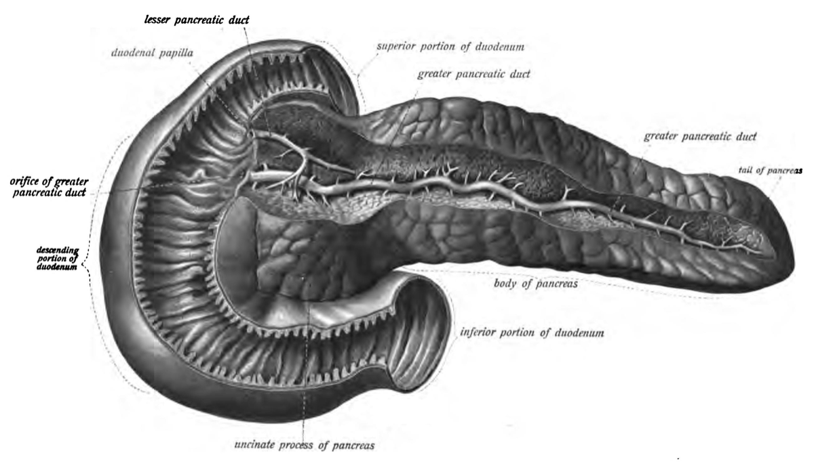
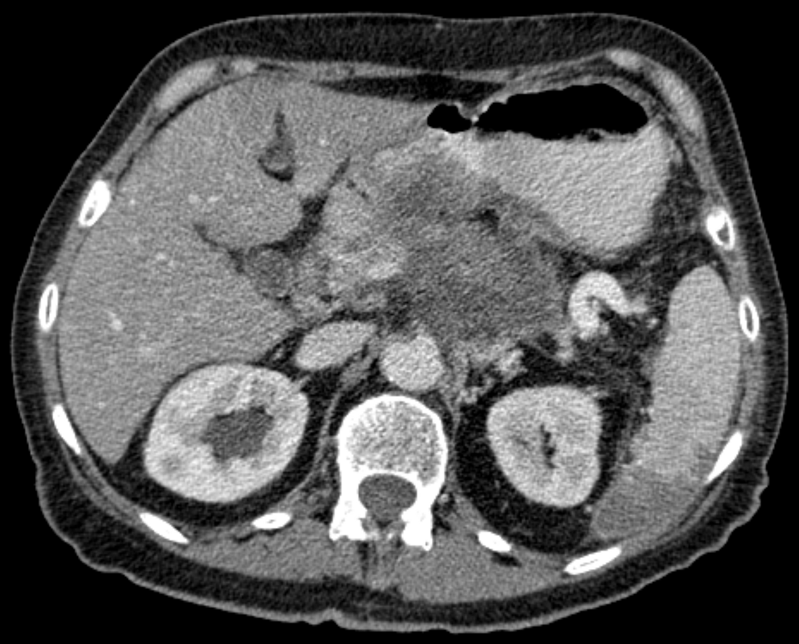
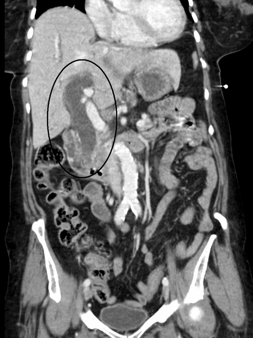
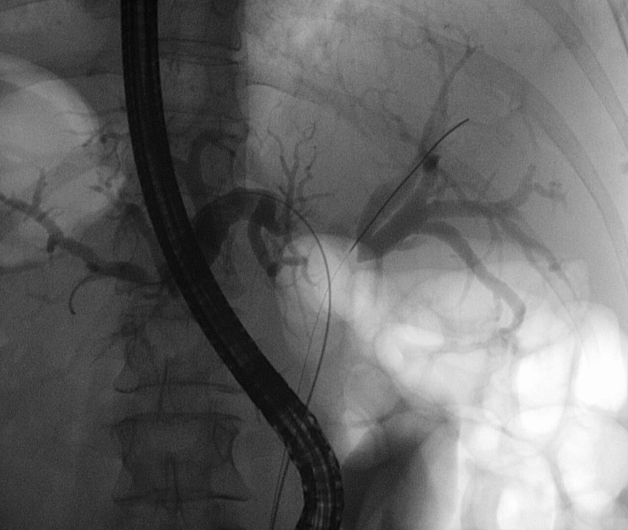

דיון מקרים: צהבת חסימתית
שלושה מטופלים בדויים: דלקת של דרכי המרה עם ספסיס, צהבת שקטה מגידול באזור הפפילה והיצרות של צינור המרה אחרי ניתוח
בסוף המפגש תדעו
- לזהות צהבת חסימתית בבדיקה ובמעבדה ולמקם את החסימה לפי האולטרסאונד
- להבדיל בין חסימה מאבן (כואבת וחדה) לחסימה ממארת (שקטה והדרגתית)
- לזהות דלקת של דרכי המרה, להעריך את חומרתה ולדעת מתי ואיך מנקזים
- לבנות בירור לצהבת שקטה: CT לפני כל פעולה פולשנית, EUS עם ביופסיה וסטנט
- להכיר היצרות שפירה אחרי כריתת כיס מרה ואת העקרונות של התיקון
איך נראית צהבת חסימתית
- בילירובין ישיר (מצומד) עולה בחסימה. בילירובין עקיף עולה בבעיה עד שלב הצימוד (פירוק מוגבר, קליטה או צימוד פגומים)
- איפה רואים קודם: מתחת ללשון, אחר כך בלחמיות (מבילירובין של 2.5 מ״ג/ד״ל) ורק אחר כך בעור (מ-5 מ״ג/ד״ל)
- הסיפור: שתן כהה, צואה בהירה, גרד
- דפוס כולסטטי: ALP ו-GGT גבוהים, טרנסאמינזות כמעט תקינות. באבן חדה ALT יכול לעלות מאוד
- CA 19-9: סמן לגידולי לבלב ודרכי מרה, אבל עולה גם בחסימה שפירה
- הסיבה השכיחה: אבן בצינור המשותף. ברשימה גם Mirizzi, היצרויות וגידולים

מהשער של הכבד ועד הפפילה

👆 לחצו על אזור בציור כדי לקרוא עליו
גידול בפיצול (Klatskin), היצרויות של PSC, פגיעה גבוהה בניתוח. החסימה גבוהה, לכן כיס המרה והצינור המשותף ריקים והצינורות בתוך הכבד רחבים
תסמונת Mirizzi: אבן גדולה בכיס הרטמן לוחצת על הצינור הכבדי וגורמת לצהבת, לפעמים עם פיסטולה. בחסימה נמוכה (גידול בפפילה) כיס המרה מתוח
הסיבה השכיחה לחסימה. החסימה חדה, הצינור נמתח מהר ולכן כואב. חסימה עם חיידקים: דלקת של דרכי המרה
כאן יושבים גידולי האמפולה וכולנגיוקרצינומה רחוקה. הם חוסמים את צינור המרה בלי לחסום את צינור הלבלב. אבן קטנה באמפולה עלולה להתפספס ב-MRCP
רוב סרטני הלבלב בראש הלבלב. רוב הגידולים באזור הפפילה הם מהלבלב. סימן אופייני ב-CT: מסה, הרחבה של צינור המרה וגם של צינור הלבלב ונסיגה של הלבלב שמעבר לגידול
דרכו עובר ה-ERCP אל הפפילה. גידול בתריסריון יכול לחסום את דרכי המרה. גידול מתקדם בראש הלבלב יכול לחסום את התריסריון (הקאות, קיבה מתוחה)
כיס מרה עם אבנים, אבן בצינור המשותף עם דלקת, לבלב ותריסריון · BruceBlaus · CC BY-SA 4.0 · Wikimedia Commons
כואב או שקט? ואז הדמיה
| אבןחסימה חדה | גידולחסימה הדרגתית | |
|---|---|---|
| כאב | כואב: הצינור נמתח מהר | צהבת שקטה. כאב קבוע מרמז על מחלה מתקדמת |
| דלקת של דרכי המרה | שכיחה | לא שכיחה |
| כיס המרה | לרוב עם אבנים | חסימה נמוכה: כיס מרה מתוח. חסימה בשער: כיס מרה ריק |
| עוד | היסטוריה של כאב בילארי | ירידה במשקל, סוכרת חדשה, גרד |
חום, צהבת ובלבול
- מה האבחנה וכמה היא חמורה?
- מה עושים בשעה הראשונה?
- איך ומתי מנקזים?

דלקת של דרכי המרה
האבחנה
- זיהום עולה בצינור המשותף בגלל חסימה ולחץ גבוה. הסיבה השכיחה: אבן
- שלישיית Charcot (חום, צהבת, כאב ברבע הימני העליון) מופיעה בפחות ממחצית. הצהבת היא הסימן הכי פחות שכיח. לויקוציטוזיס ותפקודי כבד לא תקינים שכיחים יותר
- מחומש Reynolds: גם בלבול ותת-לחץ דם. סימן רע. בלי טיפול מהיר התמותה קרובה ל-100%
- אצלה: דלקת קשה עם הלם ספטי
החיידקים
- באבן חוסמת, חיידקים במרה עד 90%. Klebsiella, E. coli, Enterobacter, Pseudomonas, Citrobacter. בין הגראם חיוביים: אנטרוקוק
הטיפול לפי חומרה
הטיפול המלא (כריתת כיס המרה) נדחה עד שהמטופלת יציבה והזיהום טופל
קודם ERCP. אם לא, PTC
- ERCP: חתך בסוגר (sphincterotomy) והוצאת אבנים בבלון. מנקה ביותר מ-75% בפעם הראשונה וב-90% עם חזרה. סיבוכים, כולל דלקת לבלב: עד 10%
- לא הצליחו לנקות הכול? משאירים סטנט ומנסים שוב
- למה ERCP נכשל: אבן מעל 2.5 ס״מ, Roux-en-Y, אבן תקועה, אבנים בתוך הכבד, הרבה אבנים
- PTC: מחט דרך הכבד לצינורות, בהנחיית אולטרסאונד. משאירים צנתר לניקוז. יעיל כמו ERCP כשהצינורות רחבים. כשהם צרים הוא קשה יותר
- מיפוי HIDA פחות אמין בדלקת של דרכי המרה


"אשתי אמרה שאני צהוב"
- איפה החסימה ומה הסיבות האפשריות?
- לשלוח מחר ל-ERCP?
- איך מגיעים לאבחנה רקמתית?

צהבת שקטה: קודם CT
איפה ומה
- צינור משותף רחב וכיס מרה מתוח: חסימה נמוכה, באזור הפפילה
- אפשרויות: סרטן בראש הלבלב (הכי שכיח), גידול באמפולה, בתריסריון, כולנגיוקרצינומה רחוקה
- סרטן לבלב: צהבת, כאב בבטן העליונה או בגב וירידה במשקל. כ-40% עם סוכרת חדשה וירידה במשקל
- בלוטה מעל עצם הבריח השמאלית או ליד הטבור: חשד לגרורות
למה לא ERCP מחר בבוקר
- בגידול בלבלב החסימה הדרגתית ולרוב בלי דלקת של דרכי המרה. ניקוז דחוף כמעט אף פעם לא נחוץ
- אחרי ERCP יש דלקת לבלב בכ-4%. הדלקת מטשטשת את הקשר בין הגידול לכלי הדם ב-CT ופוגעת בהערכת השלב
- קודם CT בפרוטוקול לבלב (פרוסות של 1 מ״מ, שלב עורקי מאוחר ושלב ורידי) עם צילום חזה ב-CT


ממצאים, רקמה וסטנט
שלושה סימנים של סרטן בלבלב
- מסה בראש הלבלב
- "צינור כפול": הרחבה של צינור המרה וגם של צינור הלבלב
- נסיגה (אטרופיה) של הלבלב שמעבר לגידול
אין צינור כפול ואין מסה? לחשוב על גידול באמפולה, בתריסריון או כולנגיוקרצינומה רחוקה
השלב קובע את הדרך
- נתיח: אין מגע עם העורקים (SMA, צליאק, עורק הכבד)
- גבולי: מגע של עד 180 מעלות עם עורק, או וריד שאפשר לשחזר. מקבלים טיפול לפני הניתוח
- מתקדם מקומית: עטיפה של יותר מ-180 מעלות. גרורות: לא מנתחים
- יותר מ-80% מגיעים עם גרורות
לא תמיד צריך סטנט לפני הניתוח
- במטופל שמתאים לניתוח לא חייבים אבחנה רקמתית לפני הכריתה. ציטולוגיה ממברשת לא אמינה. תשובה שלילית לא שוללת סרטן
- בעד 15% ממי שנותח בחשד לגידול בדרכי המרה מתברר שהמחלה שפירה
- ניקוז לפני ניתוח בכולנגיוקרצינומה רחוקה מעלה את שיעור הזיהומים אחרי הניתוח (Sabiston מפרט זאת בפרק דרכי המרה)
- ובכל זאת מנקזים כשהבילירובין מעל 10 מ״ג/ד״ל, או כשהניתוח יתעכב (למשל טיפול כימי לפני הניתוח)
חמישה חודשים אחרי ניתוח "קשה"
- מה הסיבה הסבירה?
- איך מסווגים אותה?
- מה הטיפול ומי עושה אותו?

היצרות אחרי פגיעה בצינור
הסיבה והסיווג
- הסיבה השכיחה להיצרות באמצע הצינור: פגיעה בכריתת כיס מרה (עד 1% מהכריתות). יותר מ-80% מהפגיעות בצינור קורות בניתוח הזה
- פגיעה שלא דולפת מתבטאת בצהבת, עם או בלי כאב. פחות מ-10% מההיצרויות מתגלות בשבוע הראשון, יותר מ-70% תוך חצי שנה
- סיווג Strasberg (E1–E5): E1 נשארים יותר מ-2 ס״מ מתחת לפיצול. E2 פחות מ-2 ס״מ (כמו כאן). E3 בפיצול. E4 הורס את הפיצול
- ב-20% או יותר יש גם פגיעה בכלי דם שלא זוהתה. איסכמיה היא סיבה שכיחה להיצרות
שלוש מטרות הטיפול
- בסדרות רבות יותר מ-90% חופשיים מצהבת ומזיהום אחרי התיקון. התוצאות טובות יותר במרכז מנוסה
- הרחבה בבלון דרך העור מצליחה בעד 70%. כשהרצף של הצינור שמור, ERCP עם סטנט הוא הטיפול הראשון בהיצרות שפירה
חסימה גבוהה מול חסימה נמוכה
- כולנגיוקרצינומה בשער (Klatskin), פגיעה גבוהה בניתוח, PSC
- כיס המרה והצינור המשותף ריקים
- חסימה של צד אחד: לפעמים בלי צהבת, עם אטרופיה של האונה החסומה
- CT לא מספיק: צריך צילום דרכי מרה (MRCP, PTC או ERCP) כדי לדעת עד כמה הגידול מגיע
- ניקוז: PTC שימושי יותר. ניקוז של אונה מנוונת לא עוזר
- סרטן בראש הלבלב, גידול באמפולה או בתריסריון, כולנגיוקרצינומה רחוקה, אבן
- הצינור המשותף רחב, כיס המרה מתוח
- ניקוז: ERCP עדיף
- ניתוח: כריתת לבלב ותריסריון. בכולנגיוקרצינומה רחוקה עם שוליים נקיים ובלי בלוטות: הישרדות של עד 50% ל-5 שנים
מחקרים שכדאי להכיר
ממליצים על ניקוז אנדוסקופי ולא מלעורי. הניקוז תוך 48 שעות. כשאפשר, להוסיף חתך בסוגר והוצאת אבנים כבר בפעולה הראשונה. במטופל לא יציב: ניקוז בלבד
Buxbaum JL, Buitrago C, Lee A, et al. Gastrointest Endosc 2021;94(2):207-221.e14DRA-MBO (155 מטופלים) ו-ELEMENT (144): הצלחה טכנית דומה או טובה יותר ב-EUS (96.2% לעומת 76.3% ב-DRA-MBO), פעולה קצרה יותר. אין הבדל בתפקוד הסטנט אחרי שנה או בסיבוכים
Teoh AYB et al. Gastroenterology 2023;165(2):473-482 · Chen YI et al. Gastroenterology 2023;165(5):1249-1261246 מטופלים עם גידול נתיח או גבולי. כימו-קרינה לפני הניתוח לעומת ניתוח מיד: הישרדות ל-5 שנים 20.5% לעומת 6.5% (HR 0.73)
Versteijne E, van Dam JL, Suker M, et al. J Clin Oncol 2022;40(11):1220-1230 (מצוטט ב-Sabiston 22)685 מטופלים עם מחלה מתקדמת. הוספת durvalumab לכימותרפיה (gemcitabine ו-cisplatin) האריכה חיים (HR 0.80). הישרדות לשנתיים 24.9% לעומת 10.4%
Oh DY, He AR, Qin S, et al. NEJM Evid 2022;1(8):EVIDoa2200015 (מצוטט ב-Sabiston 22)חמישה דברים לקחת למחלקה
- צהבת עם כאב: לחשוב על אבן. צהבת שקטה עם ירידה במשקל: לחשוב על גידול
- אולטרסאונד ממקם את החסימה: כיס מרה מתוח וצינור משותף רחב = נמוכה. כיס מרה ריק = גבוהה
- חום, צהבת, בלבול ולחץ דם נמוך: דלקת קשה של דרכי המרה. החייאה, אנטיביוטיקה וניקוז מהיר
- בחשד לגידול: CT לפני כל ERCP. רקמה ב-EUS וסטנט מתכת באותה פעולה
- צהבת חודשים אחרי כריתת כיס מרה: לחשוב על היצרות מפגיעה. מפה מלאה ותיקון במרכז מנוסה